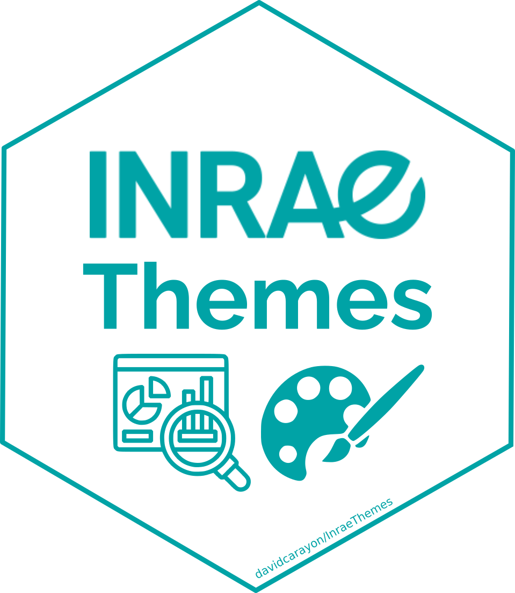

n % val% %cum val%cum
Employe 594 29.7 35.9 29.7 35.9
Ouvrier qualifie 292 14.6 17.7 44.3 53.6
Cadre 260 13.0 15.7 57.3 69.3
Ouvrier specialise 203 10.2 12.3 67.4 81.6
Profession intermediaire 160 8.0 9.7 75.4 91.3
Technicien 86 4.3 5.2 79.8 96.5
Autre 58 2.9 3.5 82.7 100.0
NA 347 17.3 NA 100.0 NA
Total 2000 100.0 100.0 100.0 100.0Bulle d’R n°1 : Bonnes pratiques à ETTIS
Sandrine LYSER ![]()
David CARAYON
1 juin 2023
Créer un projet sous RStudio
Sélectionner l’option “New project”, puis l’option “New Directory” et enfin “Empty Project”


Exemples d’arborescence
Exemples de structurations
(chacun s’organisera de la façon qu’il juge la plus adaptée à ses usages)

A noter
Le plus important, ce sont les données initiales et les scripts de traitements.
Coup de pouce : Le package {InraeThemes}

Importer ses données (S)
1) Le concept de données tidy
2) Importer proprement ses données (xlsx, csv)
3) Viewxl : pour vérifier son import ou explorer
Quelques mises en gardes
- Les fonctions provenant de packages tels que ceux du
tidyverseproposent énormément de fonctionnalités pratiques, utiles, fonctionnelles par rapport aux fonctionnalités classiques de R - MAIS ont un cycle de développement très dynamique pouvant mener à des fonctions rapidement
deprecatedousuperseded

{skimr} : Un summary sous st√©ro√Ødes üí™

{easystats} : Les statistiques ‚Äúfaciles‚Äù ü§©

{ggstatsplot} : Combiner statistiques et représentations graphiques

{PCAmixdata} : L’analyse mixte
Chavent, M., Kuentz-Simonet, V., Labenne, A., & Saracco, J. (2014). Multivariate analysis of mixed data: The R package PCAmixdata. arXiv preprint arXiv:1411.4911.

Quarto
- Quarto est le successeur de Rmarkdown qui se veut plus généraliste
- ⚠️ Rmarkdown n’est pas mort pour autant !

Hello Quarto

Plus d’informations sur quarto.org
Renv : Figer ses versions de package R
Sans {renv}

Les packages sont communs pour tous les projets
Avec {renv}
Le projet 1 peut utiliser dplyr 1.0.2 et le projet 2 dplyr 0.8.2
Git

Pourquoi utiliser Git ?
Garder en mémoire chaque modification de chaque fichier, pourquoi elle a eu lieu, quand et par qui
Faciliter le développement collaboratif : Fusion des différentes modifications
Revenir aux versions précédentes (+ sauvegarde du travail)
Ne soyons pas trop exigeants…


Slides made with …
